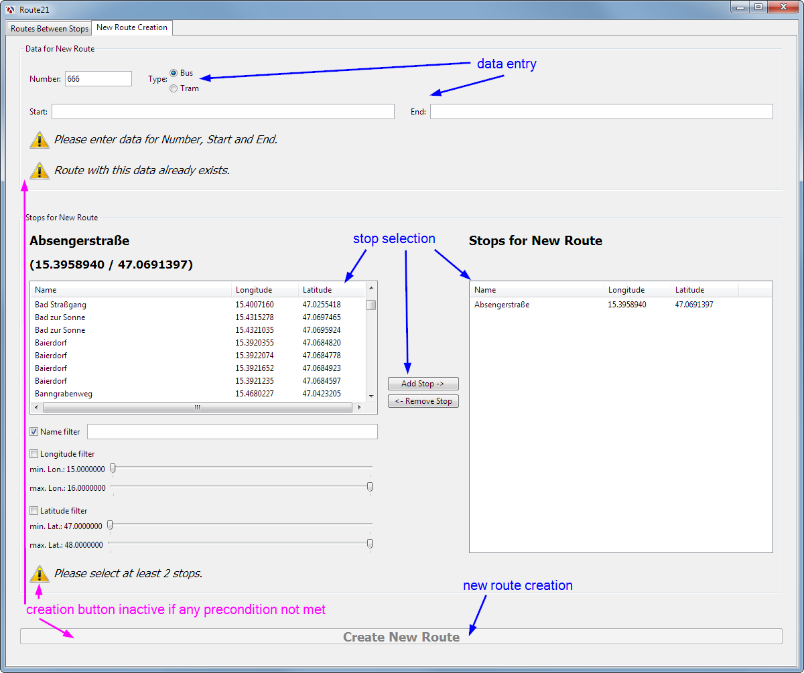

Creation of New Routes
| (require "edit-panel.rkt") | package: base |

1 Edit Panel
All work is done by a dedicated edit-panel% class.
|
superclass: vertical-panel% |
data entry for new route data
stop selection for route’s stops
new route creation button
See Consistency Checks.
(define edit-panel% (class vertical-panel% (init parent provider) (super-new [parent parent]) <data-entry> <stop-selection> <new-route-button> <consistency-checks>))
1.1 Data Entry
Placement of respective controls. On each input change, data-ok? is called to perform consistency checks.
(define data-panel (new group-box-panel% [parent this] [label "Data for New Route"] [font large-font] [alignment '(left top)] [horiz-margin horiz-margin] [border 10] [spacing 10] [stretchable-height #f])) (define number-type-panel (new horizontal-panel% [parent data-panel] [alignment '(left center)] [spacing 20])) (define number-field (new text-field% [parent number-type-panel] [label "Number: "] [stretchable-width #f] [min-width 100] [callback (lambda (control event) (data-ok?))])) (define type-choice (new radio-box% [label "Type: "] [parent number-type-panel] [choices '("Bus" "Tram")] [callback (lambda (control event) (data-ok?))])) (define start-end-panel (new horizontal-panel% [parent data-panel] [spacing 20])) (define start-field (new text-field% [parent start-end-panel] [label "Start: "] [callback (lambda (control event) (data-ok?))])) (define end-field (new text-field% [parent start-end-panel] [label "End: "] [callback (lambda (control event) (data-ok?))])) (define data-message (new info-message% [parent data-panel] [label "Please enter data for Number, Start and End."])) (define exists-message (new info-message% [parent data-panel] [label "Route with this data already exists."]))
1.2 Stop Selection
Placement of respective controls. On each change of selected stops, data-ok? is called to perform consistency checks.
(define stop-panel (new group-box-panel% [parent this] [label "Stops for New Route"] [font large-font] [alignment '(left top)] [horiz-margin horiz-margin] [vert-margin 30] [border 10] [spacing 10])) (define inner-stop-panel (new horizontal-panel% [parent stop-panel])) (define stop-selector (new compound-stop-selector% [parent inner-stop-panel] [initial-stops (send provider stops)] [allow-compounds #f])) <buttons> (define stop-list-panel (new vertical-panel% [parent inner-stop-panel] [spacing 10])) (define selection-message (new message% [label "Stops for New Route"] [parent stop-list-panel] [font large-font] [stretchable-width #t])) (define dummy-spacer-message (new message% [label ""] [parent stop-list-panel] [font larger-font] [stretchable-width #t])) <selected-stop-display> (define stop-number-message (new info-message% [parent stop-panel] [label (format "Please select at least ~a stops." route-min-stops)]))
1.2.1 Buttons
The buttons send the relevant messages to the stop-list. See Display of Selected Stops.
(define button-panel (new vertical-panel% [parent inner-stop-panel] [alignment '(center center)] [stretchable-width #f] [horiz-margin 10])) (define add-button (new button% [label "Add Stop ->"] [parent button-panel] [stretchable-width #t] [callback (lambda (button event) (let ([selected-stop (send stop-selector get-selected-stop)]) (when selected-stop (send stop-list add-stop selected-stop))))])) (define remove-button (new button% [label "<- Remove Stop"] [parent button-panel] [stretchable-width #t] [callback (lambda (button event) (send stop-list remove-selected-stop))]))
1.2.2 Display of Selected Stops
A one-off derivation of data-list-box% which provides methods for adding and removing stops. Also provides a callback so that changes in the stop list can be processed by Consistency Checks.
(define stop-list (new (class data-list-box% (init [data-change-callback #f]) (super-new [label ""] [parent stop-list-panel] [choices '()] [columns '("Name" "Longitude" "Latitude")] [style '(single column-headers)] [meta-data (mutable-set)]) (send this set-column-widths '(200 200 400) 100 100) (define (populate) (let* ([stops (->list (send this get-meta-data))] [sorted-stops (sort stops (lambda (stop1 stop2) (string<? (stop-name stop1) (stop-name stop2))))]) (send/apply this set (stop-value-lists sorted-stops)) (for ([index (in-naturals 0)] [stop sorted-stops]) (send this set-data index stop))) (report-data-change)) (define (selected-stop) (if-let [selected-index (send this get-selection)] (send this get-data selected-index) #f)) (define (report-data-change) (when data-change-callback (data-change-callback))) (define/public (add-stop stop) (let ([meta-data (send this get-meta-data)]) (unless (set-member? meta-data stop) (set-add! meta-data stop) (populate)))) (define/public (remove-selected-stop) (when-let [selected-stop (selected-stop)] (set-remove! (send this get-meta-data) selected-stop) (populate))) (define/public (get-all-ids) (set-map (send this get-meta-data) (lambda (stop) (stop-id stop))))) [data-change-callback (lambda () (data-ok?))]))
1.3 New Route Button
Button is activated/deactivated by data-ok? based on consistency checks.
(define new-route-button (new button% [parent this] [label "Create New Route"] [font large-font] [horiz-margin horiz-margin] [vert-margin 20] [stretchable-width #t] [callback (lambda (button event) (when (data-ok?) (send provider insert-route (route-from-controls) (send stop-list get-all-ids)) <retrigger-consistency-checks-on-route-creation>))]))
(data-ok?)
1.4 Consistency Checks
data-ok? performs three types of consistency checks:
Data entered for Number, Start and End fields?
Does route with the given data not already exist?
Are at least two stops selected for being connected by the new route?
If any check is not met, the respective info message is shown and the ’new route’ button disabled.
Check for route existence is performed with a dummy route struct, which is filled with all data but whose route-id is not evaluated.
(define (data-ok?) (let* ([data-ok? (route-data-ok?)] [exists? (route-exists?)] [stop-number-ok? (stop-number-ok?)] [all-ok? (and data-ok? (not exists?) stop-number-ok?)]) (send data-message show (not data-ok?)) (send exists-message show exists?) (send stop-number-message show (not stop-number-ok?)) (send new-route-button enable all-ok?) all-ok?)) (define (route-data-ok?) (and (non-empty-string? (send number-field get-value)) (non-empty-string? (send start-field get-value)) (non-empty-string? (send end-field get-value)))) (define (route-exists?) (let* ([new-route (route-from-controls)] [exists? (send provider route-exists? new-route)]) exists?)) (define (stop-number-ok?) (>= (set-count (send stop-list get-meta-data)) route-min-stops)) (define (route-from-controls) (let ([number (->string (send number-field get-value))] [type (->string (send type-choice get-item-label (send type-choice get-selection)))] [start (->string (send start-field get-value))] [end (->string (send end-field get-value))]) (route 0 number type start end))) (data-ok?)
2 Code Structure
<requires> (define info (get-info/full ".")) (define route-min-stops (info 'route-min-stops)) (define horiz-margin 10) <edit-panel%> (provide edit-panel%)